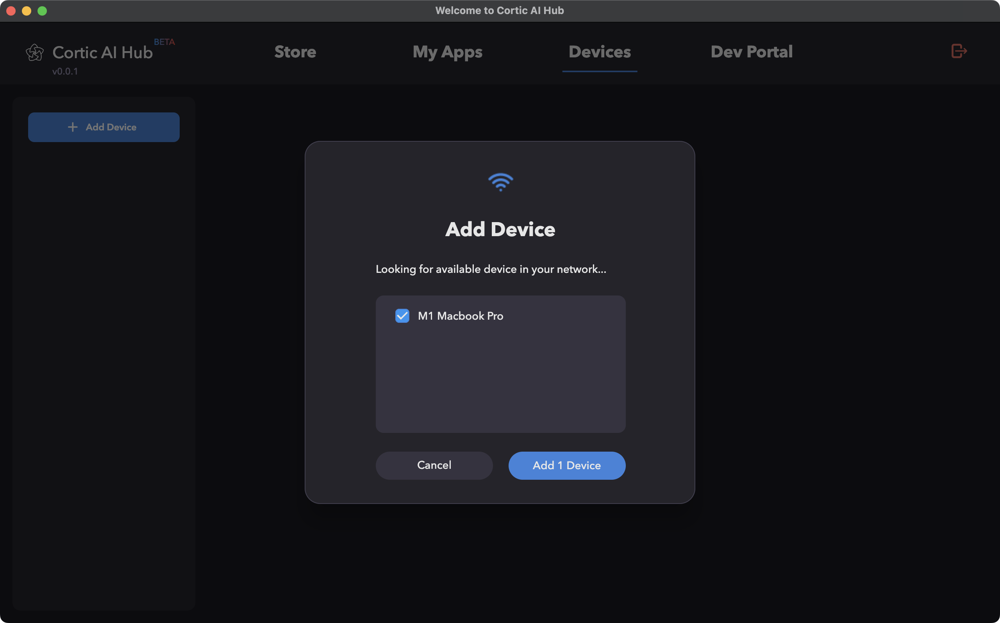
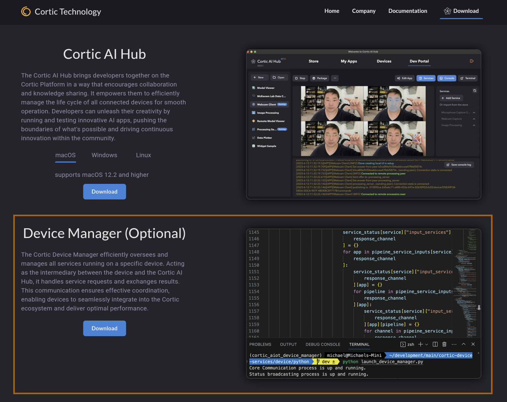
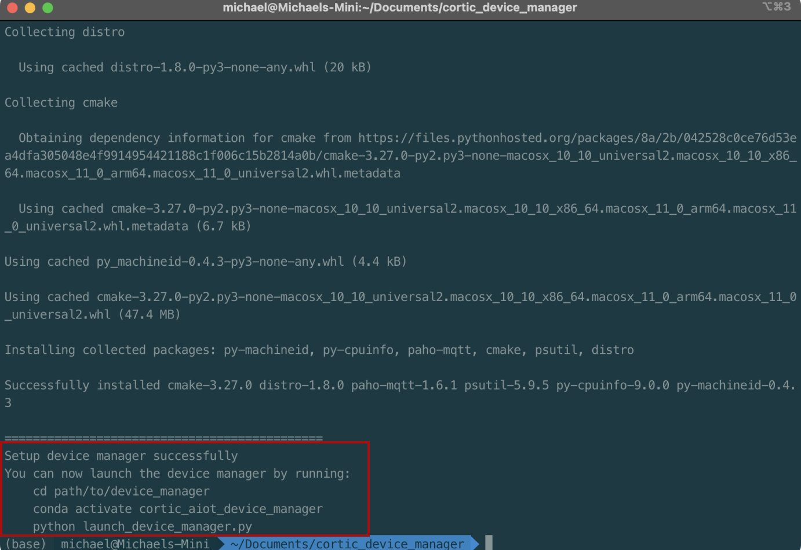

Device Management on the Cortic Platform
Welcome to the device management guide for the Cortic Platform. This guide provides detailed instructions on how
to manage devices using the Cortic AI Hub.
Adding a Default Device
With the Cortic AI Hub, you can add a default device that represents the computer running the hub.
Follow the prompts under the Devices tab in the Cortic AI Hub to add this default device.

Installing and Adding Additional Devices
To expand the devices managed by the Cortic AI Hub, follow the steps below to install and setup the Device
Manager:
- Navigate to Cortic Technology website to download the Device Manager.

- Once downloaded, unzip the downloaded file.
- Open a terminal and run the setup script provided within the unzipped folder.
python3 setup_device_manager.py
- Follow the instruction provided at the end of the setup script to launch the Device Manager.

Next Steps
Now that you've successfully set up your devices, consider delving deeper into the capabilities of the Cortic
Platform:
- Explore the documentation and tutorials on how to write new apps tailored to your needs.
- Dive into the guides on developing custom services to expand the functionalities of the platform.
- Join the Cortic community forums to share your projects, ask questions, and collaborate with fellow
developers.